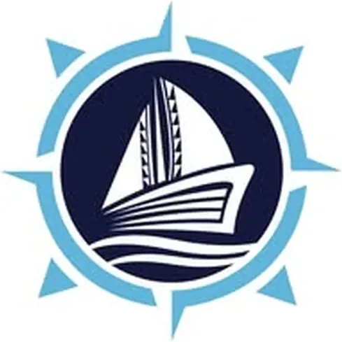

Navigatu TBI (DOST-CSU)
Caraga State University · Region XIII
Navigatu TBI is the Technology Business Incubator of Caraga State University, supported by DOST-PCIEERD, located in Butuan City, Agusan del Norte. Taking its name from “navigation,” inspired by the Balangay boats of Butuan, Navigatu TBI serves as a compass for technology-based ventures in the Caraga region (Region XIII) — guiding innovators and startup founders through the journey from idea to enterprise.
- Category
- Technology Business Incubator
- Host institution
- Caraga State University
- City
- Butuan City, Agusan del Norte
- Region
- Region XIII
- Operating status
- Operating
About the Center
Navigatu operates as the primary DOST-accredited TBI of Caraga State University, the flagship state university of the Caraga region. With a dedicated website at navigatu.org and an active social media presence, Navigatu connects Caraga’s innovators — including student entrepreneurs, faculty researchers, and community innovators — with structured incubation support, mentorship, and access to the national startup ecosystem. The TBI operates alongside the FabLab Caraga and Caraga Food Innovation Center (both at CarSU), forming part of a comprehensive innovation support ecosystem at the region’s premier state university.
Programs & Services
- Startup Incubation — Structured incubation program for technology-based ventures, providing workspace, mentorship, and business development support for early-stage Caraga startups
- Pre-Incubation & Ideation — Programs supporting innovators at the idea stage through validation, prototyping, and business model development before full incubation
- Business Development Advisory — Guidance on business planning, market research, product-market fit, and financial modeling for technology enterprises
- Mentorship & Expert Network — Access to CarSU faculty mentors, industry experts, DOST program officers, and the national startup community for guidance and connections
- IP Protection & Legal Advisory — Support for intellectual property filing, patent applications, and legal framework navigation for technology startups
- DOST-PCIEERD Program Access — Connections to DOST’s national startup support programs, Startup PH, technology commercialization grants, and the incubation network
- Demo Days & Investor Events — Pitch events, demo days, and startup showcases connecting Navigatu incubatees with investors, industry partners, and the startup community
Contact
Sources & references
- carsu.edu.ph/ovprdie/technology-business-incubator-office
- researchgate.net/publication/369481234_Managing_a_university-based_technolo…
Details are drawn from public records and the sources above, July 2026.
Startupreneur Innovation Hub · synced from the Notion catalog (July 2026) · status: published.